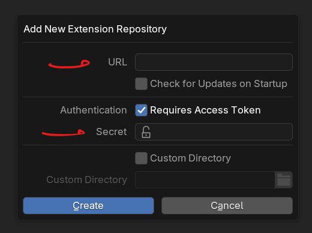

Installation¶
PME 2.1 and later are installed as an Extension. Do not enable the PME 2.0 Legacy Add-on and PME 2.1 Extension at the same time.
Supported Blender Versions¶
PME 2.1 supports Blender 4.5 through 5.2.
For PME 2.0 and earlier, see the Legacy Add-on installation archive.
1. Get Access Information
Have your Gumroad license key ready, then open the PME Setup page. After your purchase is verified, the page shows three values with different destinations:
Setup value |
Where it goes |
|---|---|
1. Repository URL |
Blender’s URL field |
2. Repository access token — Secret |
Blender’s Secret field |
3. Recovery secret — Secret |
A password manager or another secure location outside Blender; needed to extend Update Access or replace Repository access |
Important
Before selecting Finish setup, save the Repository access token and Recovery secret. These two secrets are not shown again after confirmation. Do not share them.
If you accidentally close the page first, reopen it in the same browser and retry with the same purchase key. If the unfinished setup cannot be recovered and you did not save the Recovery secret, contact support.
The setup page currently supports licenses purchased through Gumroad. Lemon Squeezy support is in preparation.
2. Add the Repository
Start Blender and open Edit > Preferences > Get Extensions.
If Allow Online Access appears, click it to allow online access.
Open the Repositories menu in the top-right, then choose + > Add Remote Repository.

Preferences > Get Extensions > Repositories > + > Add Remote Repository¶
Paste the following Repository URL into URL:
https://extensions.pie-menu-editor.com/v1/index.json
Enable Requires Access Token.
Paste the Repository access token into Secret, then click Create.
{kind=link}

Where to enter the Repository URL and Repository access token¶
Important
The Repository URL alone does not provide access. Enter the Repository access token in Secret. Do not enter the Recovery secret or purchase license key.
3. Install PME
Return to Get Extensions and sync the PME Repository. If the list does not update, run Refresh Remote.
Search for Pie Menu Editor Fork, then click Install.
If PME is disabled, enable it under Preferences > Add-ons.
This procedure covers migration from PME 1.18.x, 1.19.x, or 2.0.5.x to PME 2.1.
1. Back Up the Earlier Version and Exit
Important
If you use PME 1.18.x or 1.19.x, back up your user resources first.
PME 1 stores scripts, icons, and other resources inside or next to the old add-on folder. Before uninstalling the old version, copy the files you use to a safe location.
Backup locations
Open the standard addons folder for the Blender version you use.
<version> is the Blender version number, such as 4.2.
OS |
|
|---|---|
Windows |
|
macOS |
|
Linux |
|
Copy the following folders to a location that will not be deleted when PME is uninstalled.
Resource |
Path relative to the |
|---|---|
Custom scripts |
|
Custom icons |
|
Backups |
|
To carry over the enabled or disabled state of menus, export JSON with PME 1.19.0 or later. Earlier PME 1 versions do not include disabled states in JSON.
PME 2.0.5.x stores user resources outside the add-on itself in the user resource folder. Uninstalling versions from 2.0.0 onward does not delete these resources.
Open the earlier PME Preferences and use Export > All Menus to export your menus to a JSON file.
Uninstall the earlier PME from Preferences > Add-ons.
Exit Blender.
2. Get Access Information
Have your Gumroad license key ready, then open the PME Setup page. After your purchase is verified, the page shows three values with different destinations:
Setup value |
Where it goes |
|---|---|
1. Repository URL |
Blender’s URL field |
2. Repository access token — Secret |
Blender’s Secret field |
3. Recovery secret — Secret |
A password manager or another secure location outside Blender; needed to extend Update Access or replace Repository access |
Important
Before selecting Finish setup, save the Repository access token and Recovery secret. These two secrets are not shown again after confirmation. Do not share them.
If you accidentally close the page first, reopen it in the same browser and retry with the same purchase key. If the unfinished setup cannot be recovered and you did not save the Recovery secret, contact support.
The setup page currently supports licenses purchased through Gumroad. Lemon Squeezy support is in preparation.
3. Add the Repository
Start Blender and open Edit > Preferences > Get Extensions.
If Allow Online Access appears, click it to allow online access.
Open the Repositories menu in the top-right, then choose + > Add Remote Repository.
Preferences > Get Extensions > Repositories > + > Add Remote Repository¶
Paste the following Repository URL into URL:
https://extensions.pie-menu-editor.com/v1/index.json
Enable Requires Access Token.
Paste the Repository access token into Secret, then click Create.
Where to enter the Repository URL and Repository access token¶
Important
The Repository URL alone does not provide access. Enter the Repository access token in Secret. Do not enter the Recovery secret or purchase license key.
4. Install PME and Import Your Settings
Return to Get Extensions and sync the PME Repository. If the list does not update, run Refresh Remote.
Search for Pie Menu Editor Fork, then click Install.
If PME is disabled, enable it under Preferences > Add-ons.
When migrating from PME 1, copy your backed-up custom scripts into
scripts/and custom icons intoicons/under the user resource folder. Do not overwrite PME 2.1 files with system files from the earlier version.Open Import Menus in PME 2.1 and import the saved JSON file with Rename if exists.
compatible JSON omits some information and should not be used for migration to PME 2.1.
Settings loaded from JSON
PME menus
Hotkeys assigned to PME menus
Items to configure again in PME 2.1
General PME settings
The Global Hotkey used to open PME
Current values stored in User Properties
Custom user resource folder settings
Enablement settings for
boot_configandimport pme
PME installed from the PME Repository is updated through Blender’s Extensions system.
Open Edit > Preferences > Get Extensions.
Run Refresh Remote if needed.
Run Install Available Updates.
Confirm that the displayed PME version has changed.
Save your work and restart Blender.
Important
After updating, restart Blender before using PME again.
Although the Extension files have been updated, state from the previous PME version may remain in the same Blender session. Continuing to use PME in the session immediately after an update is not supported.
Q&A¶
- An error says that an earlier PME version is still installed
Uninstall the earlier PME, restart Blender, then enable PME 2.1.
- The UI or Hotkeys still behave incorrectly after restarting
Check Preferences > Add-ons for an earlier PME version. If one remains, uninstall it and restart Blender. If the problem continues, report the error message using the instructions below.
- Imported menus disappeared after restarting
Check whether Auto-Save Preferences is disabled. If it is disabled, run Save Preferences after importing.
- An error message or
See System Consoleappears Include the displayed message and System Console output when reporting the problem through the Support page. On Windows, open the System Console from Window > Toggle System Console.